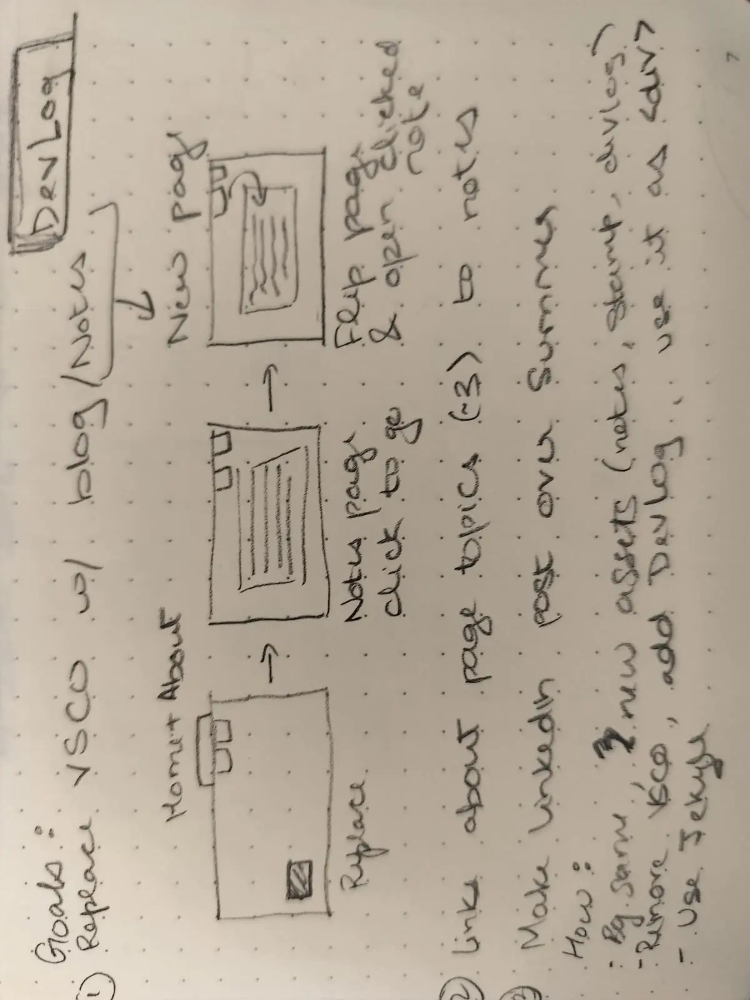
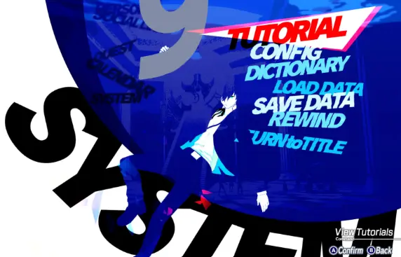

This one is about this site, specifically the UI, why it looks the way it does, and how an RPG ended up influencing my personal blog.

It started in my bullet journal. Goals: replace the VSCO button, add a blog/notes section. The "wireframe" was three boxes and some arrows. A simple, Home → Notes page (click to go) → Flip page and open notes.
Very architectural. Very serious. Very much not what this ended up being.

Persona 3 has one of the most distinctive UIs in gaming (high contrast, bold typography, aggressive angles, everything skewed and italic and urgent). The menu system in particular: a vertical list of options that curves toward the center of the screen, each entry lit up as you scroll past it.
I wanted that. Not a clone, just the feeling of it. Something that felt like a game menu rather than a blog index.
The card list you scrolled through to get here has a radial curve shoved into it, cards near the center of the screen arc outward, cards at the edges fade back. It's calculated in JS on every scroll event, mapping each card's distance from the viewport center to a translateX and rotation value.
Getting it to feel right on both desktop and mobile took an embarrassing number of iterations. Desktop uses an inner scroll container so the curve math has a fixed reference point. Mobile scrolls the whole page, so the reference has to be the viewport itself. Two completely different scroll contexts, the same function.
The log entries open in a terminal-style modal, dark background, monospace header, status bar, red close dot. It's meant to feel like you're reading a log file, which is either very cool or very cringe depending on who you ask.
Each log is its own HTML file in a logs/ folder, fetched on click and cached so repeat opens are instant. The preload runs in the background on page load, so by the time you click anything it's probably already there.
If you made it this far into the log, hi. Thanks for reading or scrolling :P.